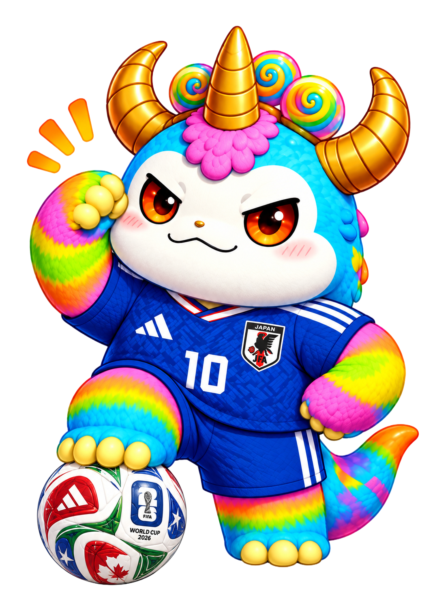

サッカーの
分からない用語
オレに聞いて！
🔥 人気の用語
/* =================================
GARAKUTA HEADER RESET FINAL
================================= */
.hero {
position: relative !important;
height: 365px !important;
min-height: 365px !important;
padding: 0 !important;
overflow: hidden !important;
}
/* ロゴ */
.hero .soccer-logo {
position: absolute !important;
top: 18px !important;
left: 18px !important;
width: 105px !important;
max-width: 105px !important;
margin: 0 !important;
transform: none !important;
z-index: 30 !important;
}
/* メニューボタン */
.hero .menu {
position: absolute !important;
top: 22px !important;
right: 18px !important;
z-index: 40 !important;
}
/* ガラクサウルス */
.hero .hero-mascot {
position: absolute !important;
top: 48px !important;
left: 50% !important;
bottom: auto !important;
width: 190px !important;
max-width: 190px !important;
height: auto !important;
margin: 0 !important;
transform: translateX(-50%) !important;
z-index: 10 !important;
}
/* 吹き出し */
.hero .speech {
position: absolute !important;
top: 25px !important;
right: 12px !important;
left: auto !important;
bottom: auto !important;
width: 145px !important;
height: auto !important;
margin: 0 !important;
padding: 10px 8px !important;
transform: none !important;
background: #fff !important;
border: 4px solid #111 !important;
border-radius: 50% !important;
text-align: center !important;
font-size: 13px !important;
font-weight: 900 !important;
line-height: 1.15 !important;
z-index: 50 !important;
}
.hero .speech strong {
color: #f3214f !important;
font-size: 17px !important;
}
/* 検索窓 */
.hero .search {
position: absolute !important;
left: 12px !important;
right: 12px !important;
bottom: 50px !important;
width: auto !important;
margin: 0 !important;
z-index: 60 !important;
}
/* 人気ワード */
.hero .popular {
position: absolute !important;
left: 12px !important;
right: 12px !important;
bottom: 8px !important;
width: auto !important;
margin: 0 !important;
z-index: 60 !important;
}